01
Tavern Heros
용병단을 꾸리는 1인 자동 전투 게임입니다. 대장을 고르고 선술집에서 용병을 분대째 고용합니다. 최대 여섯 분대의 자리를 정하면 용병들이 스스로 싸웁니다. 목표는 15라운드 보스 격파입니다.
게임 용어
- 기물
- 고용하고 배치하는 용병 팀. 팀 안에서 싸우는 개체는 유닛입니다.
- 권능
- 적 편성에 붙는 라운드 특수 효과.
- 침식도
- 패배할 때 쌓이며 100%에 도달하면 원정이 끝납니다.
- 외신
- 균열 너머에서 침입하는 존재.

- 시작
- 대장 1명 선택 · 3골드
- 용병 조합
- 기물 효과와 대장 능력 조합 · 같은 기물 3장으로 황금 1장
- 원정 목표
- 최종 15라운드의 모든 적을 쓰러뜨려 외신의 균열을 닫습니다.
- 실패
- 침식도 100% 도달 또는 최종전 패배·무승부
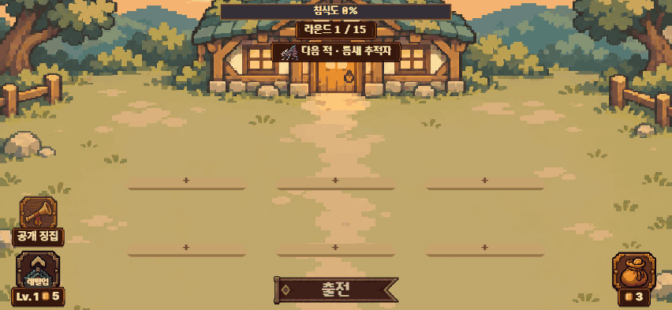
1라운드 플레이 · 고용 → 배치 → 전투 → 정산
최대 4인 협동은 계획 단계입니다.
02
오토체스에서 가장 살리고 싶었던 재미는 내가 떠올린 조합이 전장에서 통하는 순간입니다. 그 순간을 혼자서도 여러 번 경험할 수 있는 용병단 원정을 기획했습니다.
- 기물 간 시너지
- 황혼 방패병 옆에 같은 호위 기물인 저녁 망토병을 두면, 첫 출전에 망토병의 주력이 보호막을 받고 공훈도 얻습니다. 망토병을 고용할 때는 방패병을 호위 대상으로 고를 수 있습니다.
-
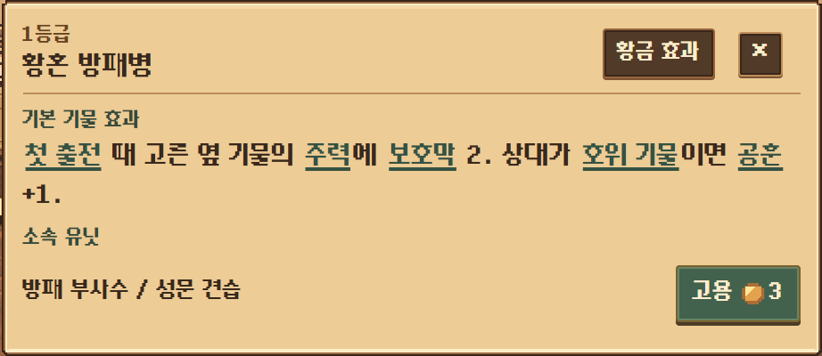
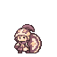
황혼 방패병 · 첫 출전 때 이웃 보호
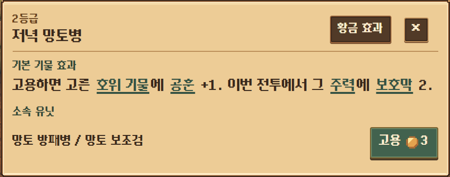
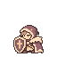
저녁 망토병 · 고용 때 호위 지원
- 대장과 기물의 연계
- 대장 로언이 새 분대를 징집하면 짐표 배달원이 그 분대에 짐꾼을 붙일 수 있습니다. 같은 고용도 누구와 함께하느냐에 따라 병력 증원으로 이어집니다.
-
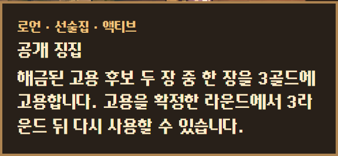
로언 · 두 후보 중 한 장을 3골드에 고용
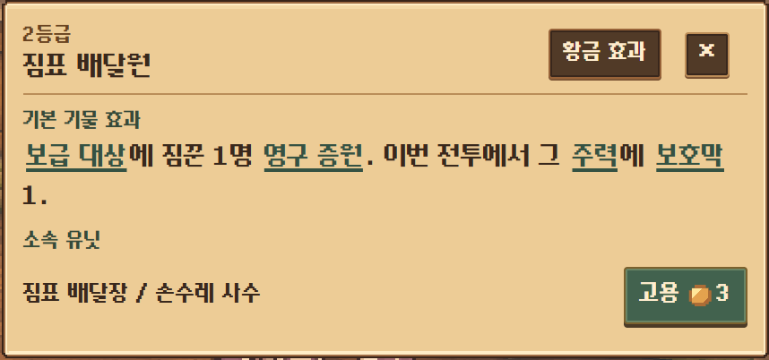
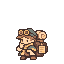
짐표 배달원 · 새로 고용한 보급 대상에 증원
- 원정마다 바뀌는 공략
- 고용 후보는 무작위로 나오고, 원정을 시작하면 라운드마다 다섯 적 편성 중 하나가 정해집니다. 적의 배치와 특수 능력이 바뀌면 같은 대장으로도 다른 용병을 택할 이유가 생깁니다.
-
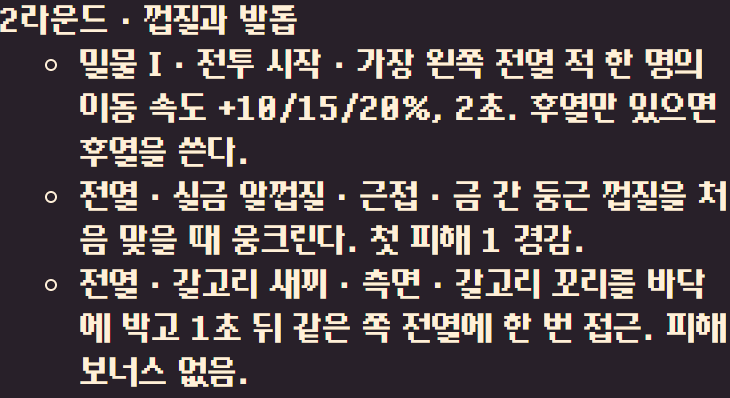
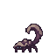
2라운드 후보 · 껍질과 발톱
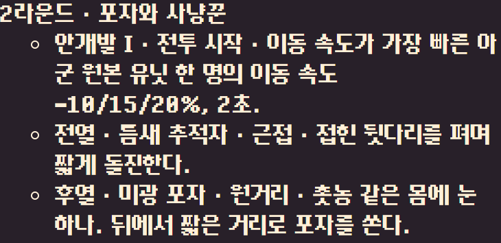
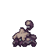
같은 라운드의 다른 후보 · 포자와 사냥꾼
03
타깃 유저층
주 대상은 조합을 실험하는 플레이어입니다. 전략적 팀 전투(TFT)에서 팀을 궁리하는 시간을 즐기고, 자신이 고른 조합으로 혼자 보스에게 도전하고 싶은 사람을 떠올렸습니다.
- 핵심 · 오토배틀러 팬
- 평소 잘 쓰지 않던 기물도 효과가 맞물리면 써 보고 싶은 사람입니다. 15라운드 보스는 자신이 고른 조합이 어디까지 통하는지 확인할 목표가 됩니다.
-
 왼쪽의 아군 분대가 오른쪽 공허군과 첫 교전
왼쪽의 아군 분대가 오른쪽 공허군과 첫 교전
- 확장 · 덱빌딩 팬
- 주어진 패에서 다음 수를 찾는 사람입니다. 원하는 용병이 안 나왔을 때 지금 있는 분대를 고용할지, 1골드를 들여 후보를 다시 뽑을지 고민하는 재미를 겨냥합니다.
-
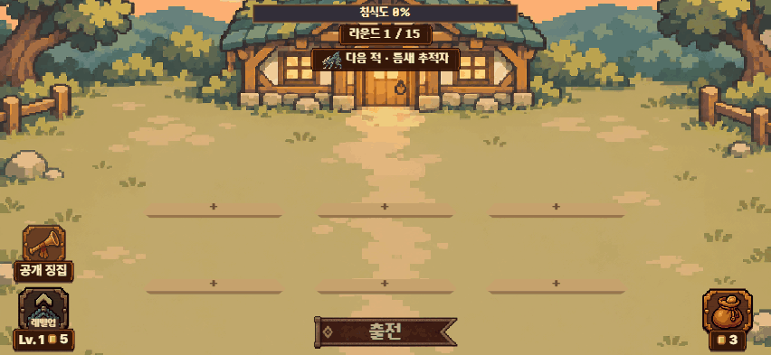
현재 후보 고용 · 3골드
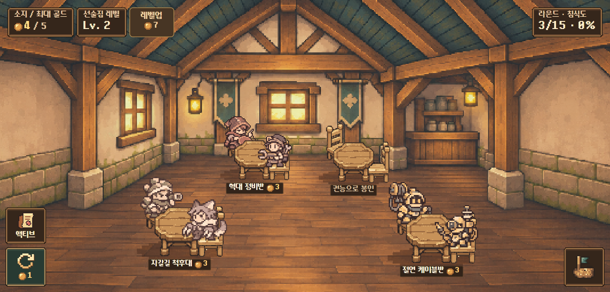
후보 다시 뽑기 · 5골드에서 4골드로
04
전략적 팀 전투와의 차이
두 게임 모두 고용과 배치로 승부합니다. TFT 기본 대전에서는 상대 플레이어의 팀을, Tavern Heros에서는 다음 적과 내가 이끄는 분대를 살핍니다.
05
TFT에도 혼자 즐기는 ‘톡톡이의 시험’이 있습니다. Tavern Heros에서 제안하는 선택 이유는 보스까지 키우는 내 분대입니다. 패배를 겪은 용병단도 다음 전투에서 다시 지휘할 수 있습니다.
- 한 칸에 한 분대
- 함께 고용한 용병은 전장에서도 한 팀입니다. 방패 분대 한 칸을 옮기면 그 병사들이 함께 앞에 서서 뒤의 사수들을 지킵니다.
-
선술집의 한 팀이 대기장의 한 칸으로
- 패배 뒤 재편성
- 일반 전투에서 전멸해도 침식도가 100% 미만이면 다음 선술집에서 병력이 복구됩니다. 먼저 쓰러진 사수에게 호위를 붙여 다음 전투에 다시 내보낼 수 있습니다.
-
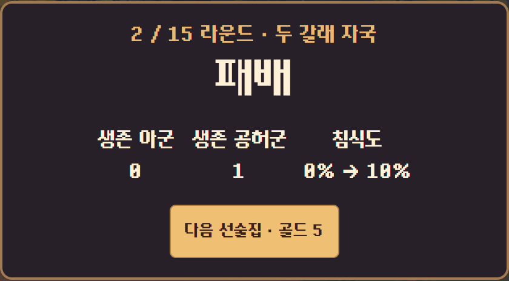
2라운드 패배 · 아군 0명, 침식도 10%
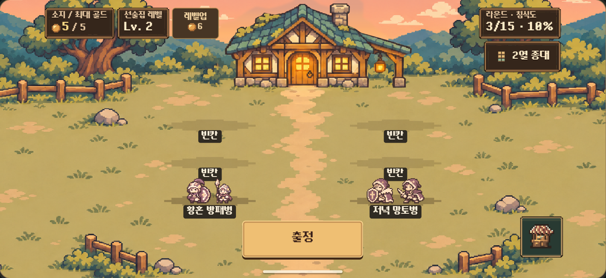
3라운드 대기장 · 두 분대 복구
- 새 대장으로 재도전
- 로언은 추가 고용 후보를 제시하고, 미레는 앞으로 두 라운드의 적을 알려 줍니다. 같은 보스에 도전해도 대장에 따라 병력을 더 모을지, 앞날을 보고 대비할지 달라집니다.
-
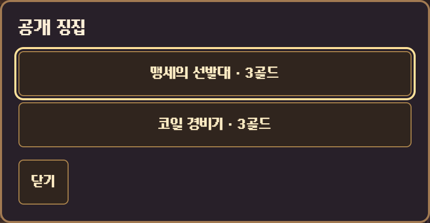
로언 · 지금 고용할 분대 선택
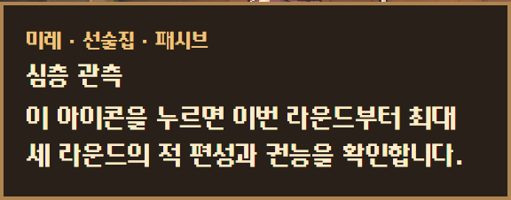
미레 · 다음 두 라운드까지 관측
검증 계획 · TFT를 즐기는 사람이 한 판 더 고를까?
TFT 경험자에게 첫 원정 뒤 자유 시간을 줍니다. 스스로 새 원정을 시작하는지, 어떤 대장이나 분대를 다시 써 보고 싶었는지 기록합니다. TFT도 할 수 있는 상황에서 어느 게임을 고를지와 그 이유를 함께 묻습니다.
초반 배치 플레이테스트 설계
06
-
선술집고용 3골드 · 판매 +1골드 · 레벨업
-
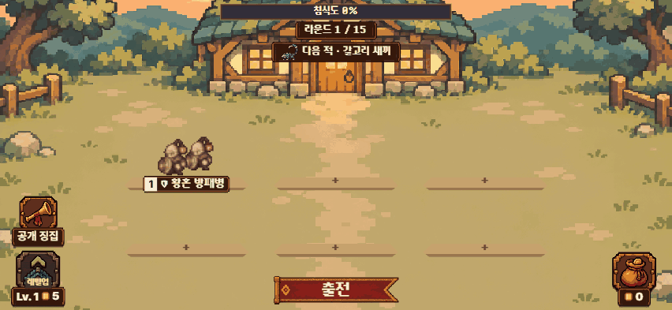
배치다음 적과 권능 확인 · 기물 최대 6장
-
자동 전투최대 30초
-
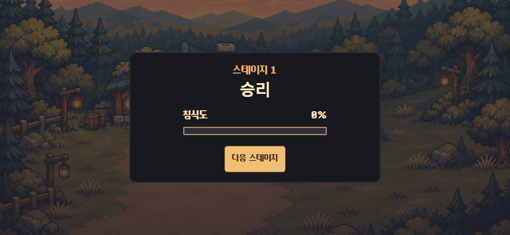
정산아군 복구 · 다음 최대 골드 +1
07
같은 3골드, 두 가지 선택
 3라운드 · 선술집 1 → 2레벨
3라운드 · 선술집 1 → 2레벨
3라운드 예시 · 5골드 · 1레벨 · 묘목 돌봄이 2장
5골드로는 둘 중 하나를 고를 수 있다.
두 선택은 같은 시작 상태에서 비교한다.
골드와 레벨업 규칙
08
같은 기물 3장 → 황금 1장 · 일반 7계열 중 5계열 등장
09
자동 전투
출정하면 근접 유닛은 빈 타격 자리까지 접근하고, 원거리 유닛은 사거리에서 멈춥니다. 배치에 따라 첫 교전이 달라집니다.
 8라운드 Unity 캡처. 왼쪽 아군, 오른쪽 공허군.교전 재생 보기
10
8라운드 Unity 캡처. 왼쪽 아군, 오른쪽 공허군.교전 재생 보기
10
변경의 초소에서 15라운드 외신의 균열까지 나아갑니다. 라운드를 골라 전장, 다음 적, 패배 시 침식도를 확인할 수 있습니다.
전장 목록을 불러오는 중…
1라운드 변경 초소 앞 풀밭
- 선술집 최대 골드
- 3골드
- 패배 시 침식도
- +8%p
이 라운드의 적 편성 보기
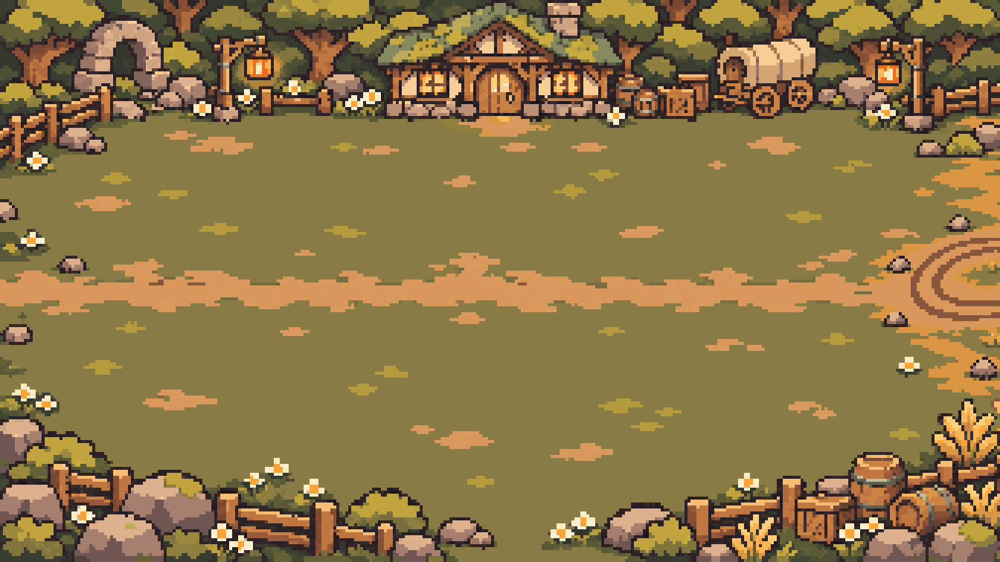
게임 전장 원본
1. 원정과 라운드
대장 1명, 3골드, 빈 편성으로 시작한다. 정산 뒤 기물과 영구 증원을 복구하고 합성·영구 성장·저장 자원을 이어받는다. 보호막 등 전투 전용 상태는 사라진다.
기획 의도 병력을 잃어도 조합을 살려 다음 라운드에 배치와 고용을 다시 판단할 수 있게 한다.
1라운드 플레이 · 고용 → 배치 → 교전 → 정산
첫 출정 화면과 조작
2. 골드·고용·선술집 레벨
고용 3골드, 판매 +1골드, 후보 교체 기본 1골드. 라운드마다 최대 골드가 1 늘고 다음 방문에 최대치로 충전된다. 잔액은 이월되지 않는다. 판매로 한도를 넘긴 골드도 이번 방문에 쓸 수 있다.
레벨업 뒤에도 기존 후보는 유지한다. 새 등급은 열린 탁자, 후보 교체, 다음 방문부터 나온다. 같은 레벨에서 라운드를 넘길 때마다 레벨업 비용이 1골드 줄어든다.
| 현재 레벨 | 등장 등급 | 탁자 | 다음 레벨 기본 비용 |
|---|
| 1 | 1 | 3 | 5골드 |
|---|
| 2 | 1–2 | 4 | 7골드 |
|---|
| 3 | 1–3 | 4 | 8골드 |
|---|
| 4 | 1–4 | 5 | 9골드 |
|---|
| 5 | 1–5 | 6 | 최고 레벨 |
|---|
기획 의도 지금 전력을 보강할지, 높은 등급을 먼저 열지 고른다. 1레벨을 유지한 3라운드에는 둘 다 3골드다.
같은 3골드로 고용과 레벨업 비교
3. 기물 조합과 황금 합성
기물 한 장은 한 칸을 쓰고 유닛을 최대 4기 출전시킨다. 원정마다 일반 7계열 중 5계열을 뽑는다. 14개 기믹은 자원 소모·증원 생산·누적 성장으로 이어진다.
같은 기물 3장은 즉시 황금 1장으로 합친다. 빈칸 없이도 세 번째 장을 살 수 있고, 결과는 재료 중 가장 앞선 슬롯에 남는다. 강화 수치와 효과는 카드마다 다르다.
기획 의도 원정마다 조합을 다시 찾고, 중복 기물을 모아 전력과 빈 슬롯을 얻는다. 카드에 발동 조건과 함께 쓸 기물을 제시한다.
계열과 카드별 효과 찾기
4. 대장·보상·성장
로언의 공개 징집 등 선술집 능력 5종을 적용했다. 대장 전용 기물과 전투 패시브 연동은 계획 단계다.
모바일 원정 종료 시 대장 팩 1개를 받는다. 뽑기에서는 신규 대장이나 중복 대장의 조각 2개를 얻는다. 경험치·선택형 특성은 Unity 첫 웨이브에서 검증했고, 15라운드 원정·홈 연동은 남아 있다.
기획 의도 같은 계열도 대장에 따라 다르게 운용한다. 팩·조각은 다음 원정까지 이어지는 별도 재화다.
대장별 능력 비교
기물 1–6장으로 출정한다. 2열 종대는 앞줄 2칸, 2열 횡대는 앞줄 3칸이다. 진형을 바꿔도 슬롯 번호는 유지된다. 이웃 효과는 상하좌우에 닿는다.
축복·호위·사냥 표식은 대상과 비용을 예약한다. 취소하면 환불하고, 출정하면 편성과 비용을 확정한다.
기획 의도 다음 적의 압박과 권능에 맞춰 위치를 옮기면 첫 타깃과 지원 대상이 달라진다.
선술집·대기장 조작 시연
6. 적 예고·권능·전장
원정 시작 시 라운드마다 후보 5개 중 적 편성 하나를 고정한다. 선술집에서 적 전후열과 권능을 예고한다. 최종 후보는 ‘삼키는 자’·분열체를 공유하고 위치·호위·권능이 다르다. 예언은 4·8·12라운드 뒤의 계획 기능이다.
기획 의도 적 예고에 고용과 배치로 답한다. 풀밭에서 균열로 바뀌는 전장이 원정의 진척을 보여 준다.
라운드별 전장과 적 편성 확인
7. 자동 전투·스킬·종료 판정
전투는 20Hz로 판정한다. 근접은 빈 타격 자리까지 접근하고, 원거리는 사거리에서 멈춘다. 스킬 조건이 맞으면 다음 행동 기회에 시전한다.
기획 의도 첫 타깃과 합류 시간이 배치의 결과를 보여 준다. 같은 시드·콘텐츠 버전·편성은 같은 결과와 로그를 낸다.
30초 종료·동시 타격·부활 판정
8. 침식도와 패배 후 복구
시작 0%. 패배마다 (8 + 2 × (라운드 − 1))%p가 쌓인다. 1라운드 +8%p, 8라운드 +22%p. 일반 무승부는 증가 0. 침식도 100% 또는 최종전 패배·무승부로 원정이 끝난다.
기획 의도 초반에는 조합을 회복할 여유를 주고 후반 패배의 부담은 키운다. 지도 오염은 라운드에 따라 진행된다.
원정·경제·침식 원본 규칙
9. 전투 이펙트와 소리
무기·투사체로 공격을 구별한다. 범위기는 위치 예고 뒤 충격파를 내고, 보호막·회복에는 별도 표식을 쓴다. 무기·피격 재질별 효과음은 같은 요청이 60ms 안에 몰리면 한 번만 낸다.
기획 의도 혼전에서도 체력바와 준비·적중·방어 신호가 보이고 들리도록 파편과 반복음을 줄인다.
1. 모바일 빌드와 화면 연동
가로 Android APK에 준비·결과 화면과 ARM64 Unity를 묶는다. 출정 시 대장·적·기물 위치·지정 능력과 비용을 넘기고, 결과로 침식도와 라운드를 갱신한다.
설계 의도 Unity에서 판정을 한 곳에 관리한다. 앱 재실행 시 저장한 준비·결과 화면으로 돌아간다.
검증 범위 APK 추출 화면을 808×360, 852×393, 1280×720에서 터치 검증했다. 실기기 설치와 WebView → Unity 전환은 검증 예정이다.
빌드 명령과 모바일 검증 기록
2. Unity 전투 코어와 재현
20Hz 판정과 화면 갱신을 분리한다. 동일 시드·버전·편성으로 이벤트 CSV를 비교한다.
설계 의도 R01A에서 첫 타격과 결과를 재현하고, 100대100에서는 충돌과 밀집 이펙트 부하를 본다. 화면·이펙트 수정 뒤에도 판정 로그를 비교한다.
검증 범위 100대100 세 편성 종료 415·515·441틱. Windows v11 이펙트 켜기·끄기 로그 일치. RTX 3070 편성 1 루프 간격 p95 1.00 → 1.14ms.
 Windows 1280×720 · RTX 3070 · Unity 100대100 편성 1
Unity 실행·캡처·측정 기록
Windows 1280×720 · RTX 3070 · Unity 100대100 편성 1
Unity 실행·캡처·측정 기록
3. 효과·기믹·적 편성 검증
대표 기믹 14개를 일반·액티브 해제·일반 재실행·황금 편성으로 비교한다. 발동 틱, 재발동, 중복 비용, 생산 상한, 부활 뒤 판정을 확인한다.
설계 의도 효과는 발동 로그로 확인한다. 적 후보 75개의 화력·유효 체력·유닛 수·전술 보정 점수는 플레이테스트 순서를 정하는 데 쓴다.
검증 범위 대표 기믹의 첫 시전과 로그 재현을 확인했다. 전체 보조·황금 조합과 1–15라운드 실제 승률은 별도 검증 대상이다.
4. 데이터와 원본 추적
효과 조건·대상·결과 / 스킬 시전·재사용·대상 / 기물 등급·계열·일반·황금 편성 / 유닛 능력치·소속·스킬
설계 의도 같은 이름도 ID로 카드·유닛·전투 로그를 추적한다. 전체 설계 도감과 Android 적용 범위는 따로 표기한다.
효과·스킬·기물·유닛 데이터 표
5. 아트·애니메이션·연출 연결
대기·이동·공격·시전·피격 모션에 무기 작용점과 발사 틱을 기록한다. 전투 이벤트로 발사·적중·방어의 이펙트와 소리를 따로 재생한다.
설계 의도 스프라이트와 믹스를 수정해도 판정을 보존한다. 가로 화면에서 유닛 윤곽·타깃 표식·체력바와 타격 순간을 먼저 확인한다.
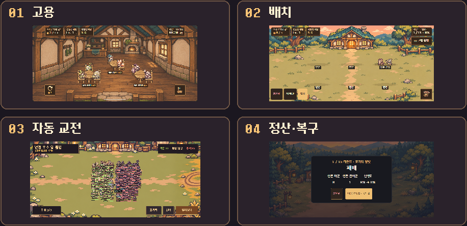
앞줄 3칸은 2열 횡대, 2칸은 2열 종대.
고용 3골드, 판매 +1골드, 후보 교체 1골드. 매 라운드 최대 골드는 1씩 늘고 남은 골드는 이월하지 않습니다.
대장 선택 → 출전 · 대장 팩은 뽑기에서 사용
첫 분대의 출정Tavern Heros는 대장 능력과 용병 조합으로 15라운드 보스에 도전하는 1인 자동 전투 게임입니다. 첫 선술집에서 3골드로 한 팀을 고용해 대기장에 놓고, 아래의 출정 버튼을 누릅니다.
왼쪽 아군이 오른쪽 적과 자동으로 싸웁니다. 전투가 끝나면 다음 선술집에서 편성을 고칩니다.
튜토리얼 화면별 안내
대장 10명 · 선술집 능력 5종 적용 · 전투 패시브·전용 기물 연동 예정
대장마다 전용 기물을 1·3·5등급에 한 장씩 설계했습니다. 현재 원정에는 선술집 대장 능력 5종이 적용됩니다.
기물 128장 · 일반 98장 · 대장 전용 설계 30장
- 일반 계열은 7개다. 각 계열의 효과 조합(기믹)이 두 가지라 총 14가지다.
- 현재 원정은 일반 7계열 중 5계열을 무작위로 뽑아 고용 후보로 쓴다.
- 도감의 17계열은 일반 7계열과 대장 전용 10계열이다. 선택한 대장의 전용 1계열을 추가하는 규칙은 설계 단계다.
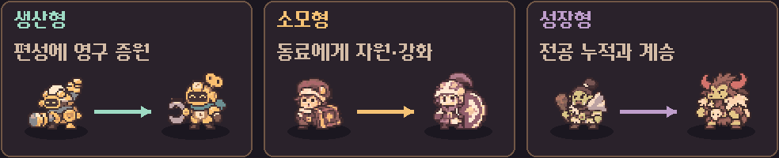
유닛 308종 · 아군 276종(설계 포함) · 공허군 32종
조건을 맞추면 자동 시전아군 유닛 14명이 스킬을 하나씩 씁니다. 플레이어는 출정 전에 분대와 자리를 고르고, 전투에서는 유닛이 대상과 거리를 확인해 스킬을 씁니다.
- 지원 7종
- ‘응급 약병’은 이번 선술집에서 보급받은 분대의 주력이 거리 4 안에 있고 체력이 60% 이하일 때 체력 3을 회복시킵니다.
- 공격 7종
- 동물형 얼룩 스라소니의 ‘갈퀴 휩쓸기’는 반경 1.6 안에 적이 둘 이상 모이면 발동합니다. 시전이 끝나면 범위 안의 적 최대 셋에게 각각 피해 3을 줍니다.
전장은 초소에서 관문을 지나 균열로 바뀝니다. 마지막 라운드에는 보스와 호위, 보스가 남기는 분열체까지 쓰러뜨려야 합니다.
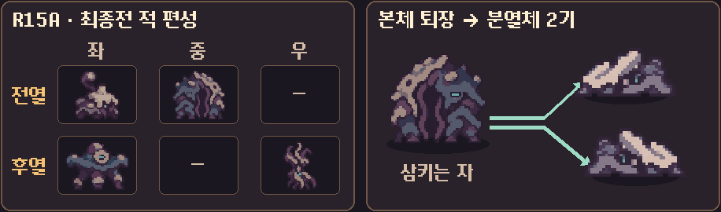
적 유닛은 도발·보호막·부활로 교전 흐름을 바꿉니다. 선술집에서 적 배치와 권능을 먼저 확인할 수 있습니다.
라운드마다 후보 5개 중 한 편성이 원정 시작 때 정해집니다. 미리 공개된 적 전후열과 특수 효과를 보고 배치를 바꿉니다.
브라우저 시연 · 고용과 자리 바꾸기
선술집을 올리면 같은 등급까지 고용 후보에 들어옵니다. 같은 레벨에서 라운드를 넘길 때마다 다음 강화 비용이 1골드 줄어듭니다.
화면이 넓어지면 주변 배경을 드러내고, 탁자와 배치 칸은 중앙 기준을 유지합니다.
Unity 캡처 · 8라운드 쌍기둥 관문
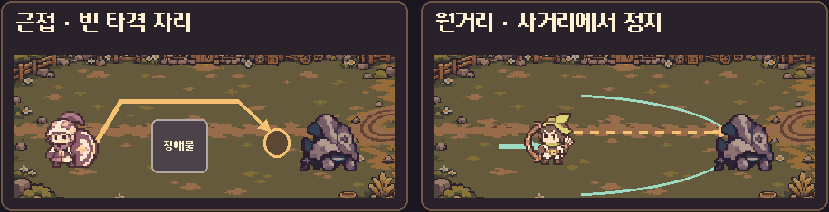
확정된 동시 공격은 모두 적용하고, 부활과 분열까지 처리한 뒤 승패를 판정합니다. 30초 뒤 양쪽 전력이 남으면 무승부입니다.
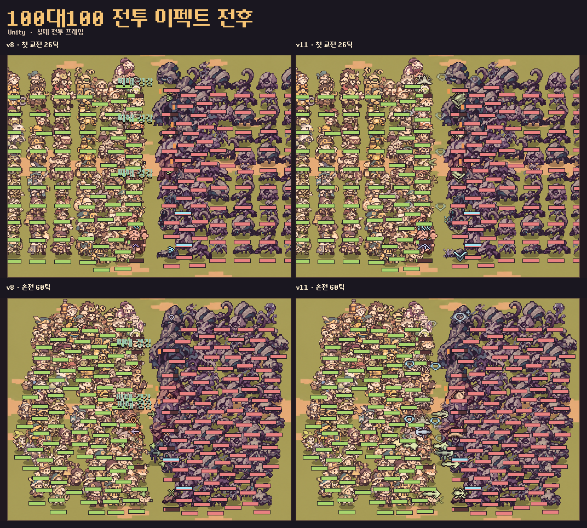
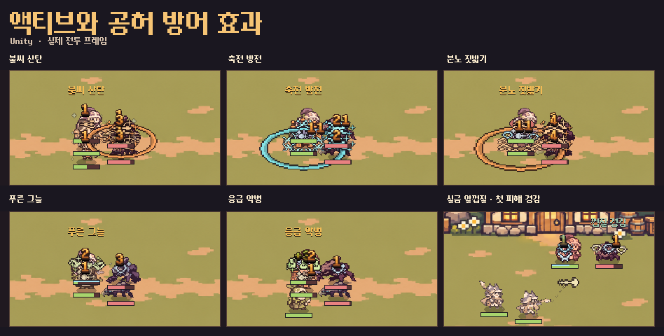
공격 준비, 발사, 적중을 서로 다른 순간에 표시하고 판정 로그에 맞춰 재생합니다.
무기별로 타격음을 구별하고, 밀집 교전에서는 가까운 시간에 반복된 같은 소리를 묶습니다.
메뉴 음악 설계
가로 Android 빌드에 준비 화면과 Unity 전투를 연결했습니다. 추출 화면의 터치 검증을 마쳤으며, 실기기 전환 검증이 남아 있습니다.
첫 라운드에서 타격과 결과를 재현하고, 100대100 전투 세 편성에서 충돌과 이펙트를 확인했습니다.
대표 기믹 14개를 일반·황금 편성과 스킬 사용 여부로 나눠 첫 발동과 기록 재현을 검증했습니다.
선술집의 따뜻한 빛과 공허의 차가운 색으로 장소를 구분하고, 전투에서는 무기와 유닛 윤곽을 우선합니다.
Pretendard 저작권 및 라이선스 · SIL OFL 1.1
아트 원본·시안 비교
유닛의 무기와 실루엣을 먼저 읽고, 글과 아이콘으로 역할과 효과를 확인하도록 카드 구성을 시험했습니다.
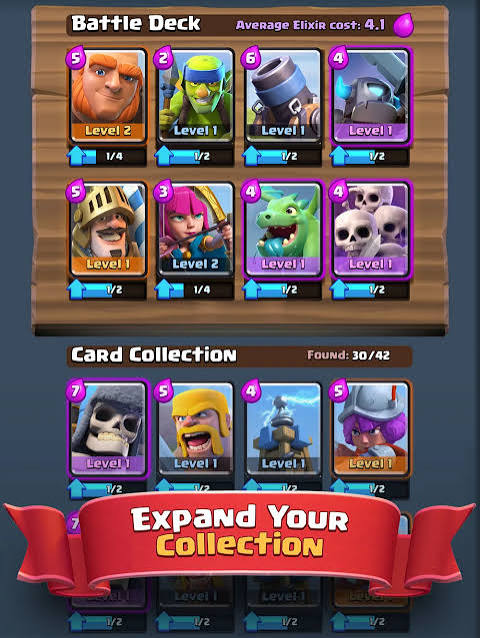
캐릭터와 무기의 가시성을 비교한 카드 덱 참고 화면
카드 시안과 가시성 연구